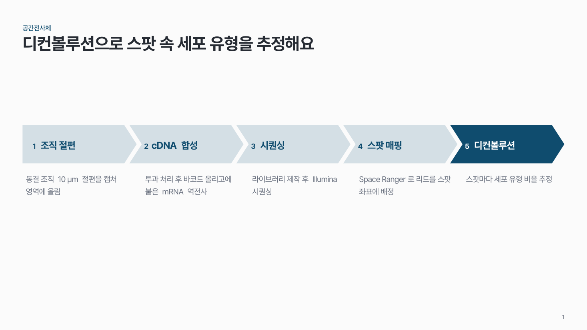
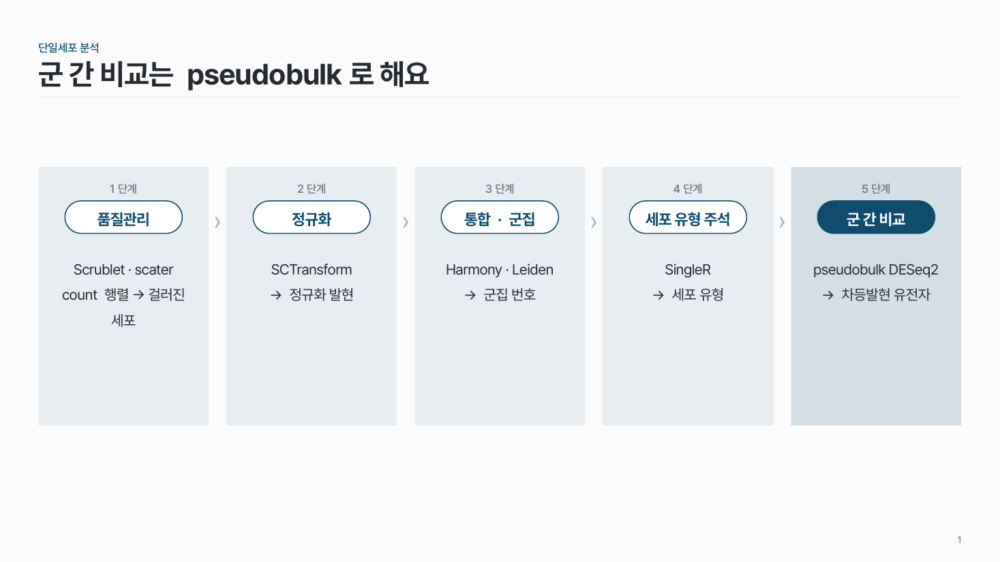
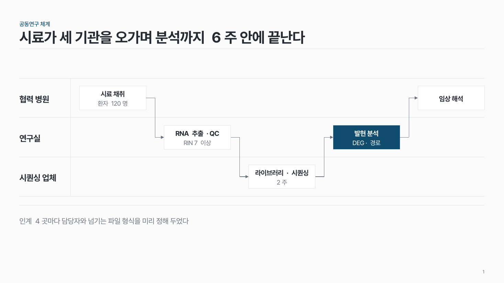

홈 › 순서·과정
순서·과정
단계를 차례로 보여 주고 싶어요
이럴 때
실험 절차, 분석 파이프라인, 시료가 단계마다 줄어드는 선별 과정, 끝나면 다시 처음으로 돌아가는 연구 주기처럼 "먼저 이것, 다음에 저것"이라는 순서 자체가 메시지일 때예요.
들어가는 것
- 단계 3–5개. 6개가 넘으면 비슷한 단계를 묶거나 두 장으로 나눠요.
- 단계마다 짧은 이름(8자 안팎)과 설명 한두 줄.
- 필요하면 단계마다 쓰는 도구, 입력 → 출력, 남은 표본 수.
강조할 것
이번 장에서 말하고 싶은 단계 하나만 진하게 칠해요. 문제가 생긴 단계, 이번에 새로 바꾼 단계, 결과를 좌우하는 단계 같은 곳이요. 나머지 단계는 같은 색의 옅은 명도로 둬요.
고르는 법
팁
- 단계 사이를 화살표로 잇지 않아요. 번호와 위치만으로 순서가 읽혀요. 화살표가 많으면 시선이 흩어져요.
- 오와 열을 맞춰요. 단계 칸의 폭과 간격을 모두 같게 두는 게 가장 중요해요.
- 단계마다 다른 색이나 아이콘을 쓰지 않아요. 한 색 안에서 명도로만 나눠요.
- 슬라이드 제목에는 과정 이름보다 그 장의 결론을 써요. ✗ "분석 과정" → ✓ "품질 필터링이 결과를 좌우해요"
- 수업 자료라면 단계 설명을 한 장에 다 넣지 말고, 단계마다 장을 나눠도 좋아요.
추천 패턴

원 + 점선 단계 flow-01
번호 원을 점선으로 잇고, 원 아래에 단계 이름과 짧은 설명을 써요.

쉐브론 단계 flow-02
화살 모양 칸을 한 줄로 이어 붙이고, 칸 안에 번호와 단계 이름을 넣어요.

단계별 열 + 알약 res-03
단계마다 옅은 세로 열을 깔고, 맨 위에 단계 이름, 그 아래 도구를 알약 모양으로, 맨 아래 입력→출력을 써요.

샘플·코호트 흐름 res-02
전체 대상에서 시작해 단계마다 빠진 수와 이유를 옆에 적고, 최종 분석 수까지 세로로 내려와요.

순환 링 flow-04
원을 단계 수만큼 조각내고, 조각 바깥에 단계를, 가운데 원에 전체를 아우르는 한 문장을 써요.

분기 흐름 flow-05
판단 지점 하나에서 조건에 따라 2–3갈래로 나뉘는 과정. 핵심 경로 하나만 진하게.

스윔레인 flow-06
주체마다 가로 레인을 두고, 작업을 순서대로 놓고, 레인이 바뀌는 인계 지점만 선으로 이어요.

연구 설계 모식도 res-01
대상 → 비교 → 측정 → 분석 네 칸으로 연구 방법을 한 장에. 비교 칸 안에 군을 쌓아요.